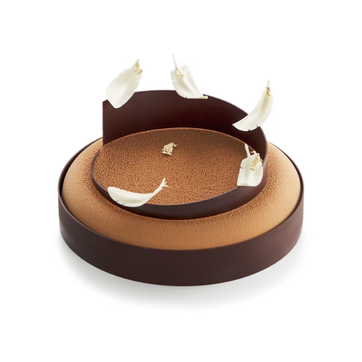

|
 |
Bánh Pháp
A Gentle Blend
525.000đ
 1
 Cà phê & Cốt dừa
Lấy cảm hứng từ những hương vị quen thuộc, A Gentle Blend là sự kết hợp hài hoà giữa lớp kem mousse cà phê rang xay đậm đà, cùng lớp kem dừa thơm ngậy. Với vẻ ngoài tinh tế được bao phủ bởi lớp nhung làm từ bơ cacao và trang trí bởi những chiếc lông vũ làm từ sô-cô-la nguyên chất. Đây là một chiếc bánh có vị ngọt vừa phải và rất phù hợp với những người yêu thích cà phê. |